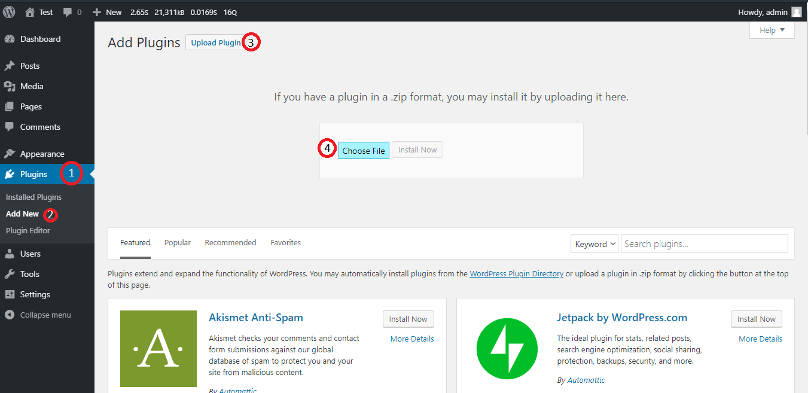
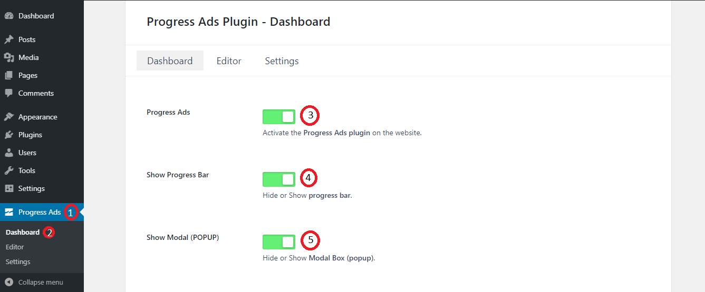
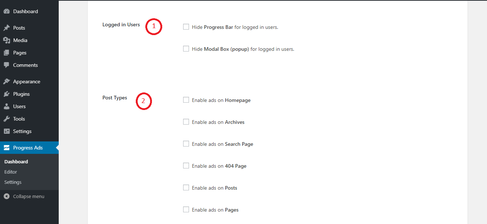
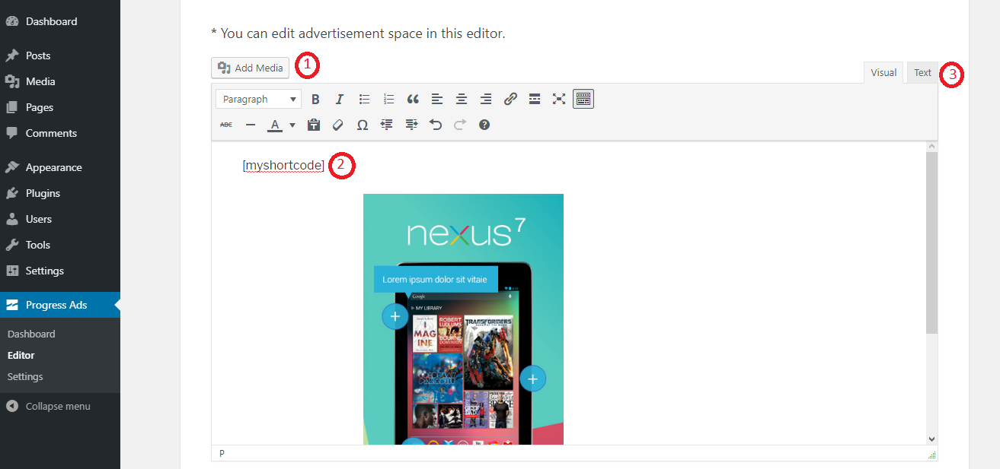
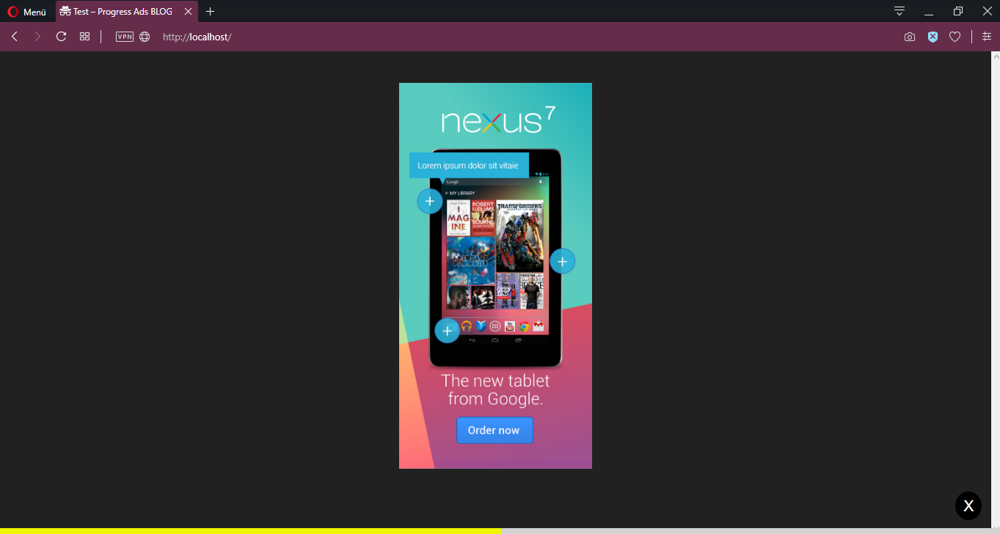
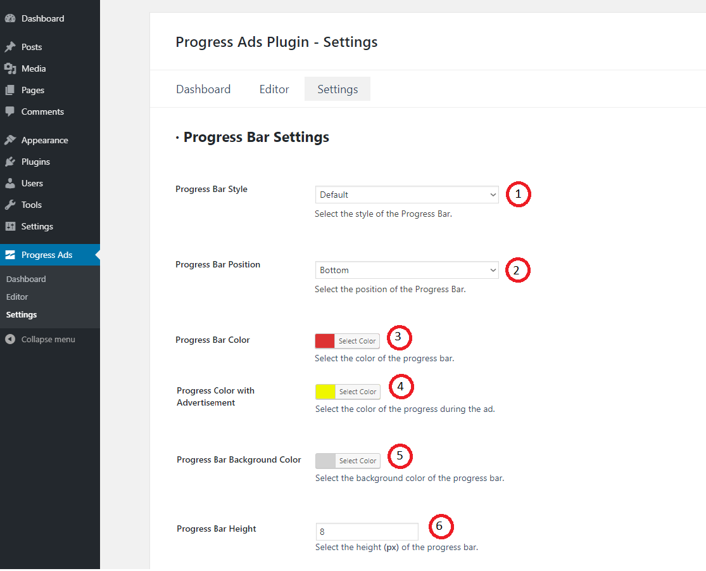
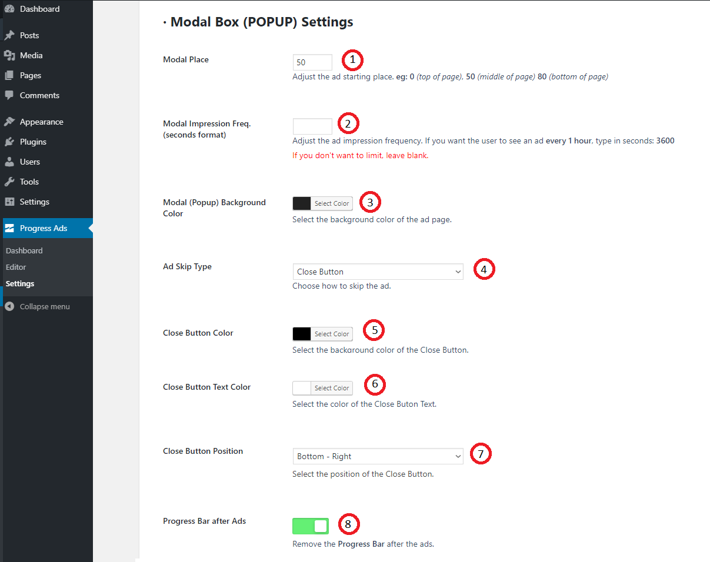
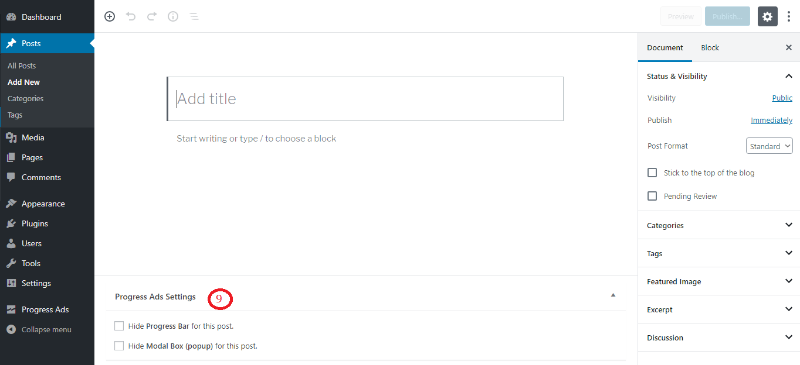

Step 1 - Installation the Plugin
In your WordPress Dashboard,
Menu > Plugins > Add New > Upload Plugin > Upload the plugin zip file you downloaded from CodeCanyon > Activate Plugin

Step 2 - Activation the Plugin
1) In your WordPress Dashboard, Menu > Progress Ads > Dashboard > Progress Ads and go to the Progress Ads control page and activate it.

2) Activation on Logged In Users and Post Types
(1) If you want, you can turn off the plug-in for logged-in users. (2) Also, remember to select pages where the plugin will be active.
Step 3 - Editor Settings
1) You can set your ad space on the Editor page.
(1) If you want, you can upload pictures or files yourself. (2) You can add shortcodes. (3) Or you can add custom codes.
It will look like this on your website:

Step 4 - General Settings
- Progress Bar Settings
1) You can customize the Progress Bar on this page.
(1) You can set the style of your progress bar in Progress Bar Style setting. (2) Adjust the position of your progress bar in the Progress Bar Position setting. (3 - 4 - 5) Edit your Progress Bar's color, ad color, and background color. (6) Also, you can adjust the height of your progress bar.
- Modal Box (Popup Ad) Settings
1) You can customize the Modal Box on this page.
(1) In the Modal Place section, you can specify where the ad will begin. For example, 0-20 the top of page. (2) Determine how often your visitors see ads. For example by typing 3600, you can show ads at 1-hour intervals. Please type in seconds. (4) Set the ad closing type. You have 2 options, first option (Close Button): Show close button immediately after the ad. Second Option (Countdown Button): Show close button after the countdown. (3 - 5 - 6 - 7) Edit your background color of the box, close button's background color, position and text. (8) This option closes the progress bar after passing the ad.

2) (9) Also, you can turn the plug-in on and off for pages.
If you have any questions, please contact with me: info@divcoder.com